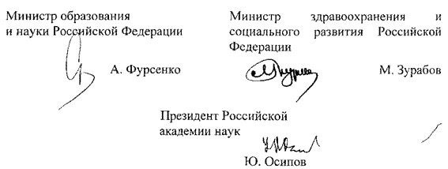

МИНИСТЕРСТВО МИНИСТЕРСТВО
ОБРАЗОВАНИЯ И НАУКИ ЗДРАВООХРАНЕНИЯ И
РОССИЙСКОЙ ФЕДЕРАЦИИ СОЦИАЛЬНОГО РАЗВИТИЯ
(Минобрнауки России) РОССИЙСКОЙ ФЕДЕРАЦИИ
(Минздравсоцразвития России)
РОССИЙСКАЯ АКАДЕМИЯ НАУК
(РАН)
ПРИКАЗ
«23 » мая 2007 г. № 145/353/34
Об утверждении Положения о порядке проведения конкурса на
замещение должностей научных работников организаций,
подведомственных Российской академии наук
Во исполнение пункта 4 постановления Правительства Российской Федерации от 22 апреля 2006 г. № 236 «О реализации в 2006 - 2008 годах пилотного проекта совершенствования системы оплаты труда научных работников и руководителей научных учреждений и научных работников научных центров Российской академии наук» (Собрание законодательства Российской Федерации, 2006, № 18, ст.2003) приказываем:
Утвердить прилагаемое Положение о порядке проведения конкурса на замещение должностей научных работников организаций, подведомственных Российской академии наук.
Российской академии наук в месячный срок разработать и утвердить форму протокола заседания конкурсных комиссий.
3. Контроль за исполнением настоящего приказа возложить на заместителя Министра образования и науки Российской Федерации Фридлянова В.Н., заместителя Министра здравоохранения и социального развития Российской Федерации Левицкую А.Ю. и вице-президента Российской академии наук Некипелова А.Д.

Приложение
Утверждено
приказом Минобрнауки России,
Минздравсоцразвития России,
РАН
от 23 мая 2007 г. № 145/353/34
ПОЛОЖЕНИЕ
о порядке проведения конкурса на замещение должностей научных работников организаций, подведомственных Российской академии наук
I. Общие положения
1.1. Настоящее Положение определяет порядок проведения конкурса, на замещение должностей научных работников и руководителей научных учреждений и научных работников научных центров, подведомственных Российской академии наук (далее - научные работники, организации).
Руководители научных учреждений, заместители руководителя по научной работе и ученые секретари организаций, подведомственных Российской академии наук, избираются (назначаются) в соответствии с законодательством Российской Федерации и в порядке, предусмотренном Уставом Российской академии наук, иными правовыми актами, принимаемыми в соответствии с Уставом Российской академии наук, и уставами вышеупомянутых организаций.
1.2. Конкурс не проводится при назначении с испытательным сроком выпускников высших учебных заведений, получивших опыт работы в период обучения, и лиц, окончивших в год назначения аспирантуру, на должности младшего научного сотрудника, стажера-исследователя, старшего лаборанта с высшим профессиональным образованием, инженера-исследователя.
1.3. К участию в конкурсе на замещение должности научного работника допускаются лица, удовлетворяющие квалификационным характеристикам, предъявляемым для замещения соответствующей должности.
II. Порядок проведения конкурса.
Состав и регламент работы конкурсных комиссий
2.1. Для проведения конкурса на замещение должности научного работника образуется конкурсная комиссия, действующая на постоянной основе.
2.2. В научном учреждении, подведомственном Российской академии наук, функции конкурсной комиссии выполняет ученый совет.
В региональных научных центрах и научных центрах региональных отделений Российской академии наук функции конкурсных комиссий выполняют президиумы соответствующих центров.
2.3. Заседания конкурсной комиссии проводятся по мере необходимости.
2.4. Объявление об условиях конкурса, дате, времени и месте его проведения, сроках приема документов для участия в нем и контактная информация публикуются работодателем в периодической печати, на сайтах организации и Российской академии наук в сети Интернет не позднее, чем за два месяца до его проведения.
Условия конкурса на замещение должностей старшего научного сотрудника, научного сотрудника, младшего научного сотрудника, стажера-исследователя, старшего лаборанта с высшим профессиональным образованием, инженера-исследователя должны включать положение о том, что с победителем конкурса заключается срочный трудовой договор по соглашению сторон.
2.5. Лицо, изъявившее желание принять участие в конкурсе, (далее - претендент) подает заявление в конкурсную комиссию. К заявлению прилагаются следующие документы:
личный листок по учету кадров;
автобиография;
копии документов о высшем профессиональном образовании;
копии документов о присуждении ученой степени, присвоении ученого звания (при наличии);
сведения о научной (научно-организационной) работе за последние пять лет, предшествовавших дате проведения конкурса.
2.6. В состав сведений о научной (научно-организационной) работе входят:
2.6.1. Список трудов претендента по разделам:
публикации в рецензируемых журналах;
монографии и главы в монографиях;
статьи в научных сборниках и периодических научных изданиях;
публикации в материалах научных мероприятий;
патенты;
публикации в зарегистрированных научных электронных изданиях;
препринты;
научно-популярные книги и статьи;
другие публикации по вопросам профессиональной деятельности.
2.6.2. Список грантов, научных контрактов и договоров, в выполнении которых участвовал претендент, с указанием его конкретной роли.
2.6.3. Сведения о личном участии претендента в научных мероприятиях (съезды, конференции, симпозиумы и иные научные мероприятия) с указанием статуса доклада (приглашенный, пленарный, секционный, стендовый) и уровня мероприятия (международное, всероссийское, региональное).
2.6.4. Сведения об участии претендента в подготовке и проведении научных мероприятий.
2.6.5. Сведения о педагогической деятельности претендента (чтение курсов лекций, проведение семинаров, научное руководство аспирантами и консультирование докторантов, другие виды педагогической деятельности).
2.6.6. Сведения о премиях и наградах за научную и педагогическую деятельность.
2.6.7. Сведения об участии претендента в редакционных коллегиях научных журналов.
2.7. В конкурсную комиссию может представляться также отзыв об исполнении претендентом должностных обязанностей с последнего места работы, подписанный уполномоченным работодателем должностным лицом.
Отзыв должен содержать мотивированную оценку профессиональных, деловых и личностных качеств претендента, а также результатов его профессиональной деятельности.
2.8. На заседание конкурсной комиссии приглашаются все претенденты, подавшие документы в установленном порядке.
2.9. Заседание конкурсной комиссии открывается представлением всех поступивших документов по каждому из претендентов.
2.10. Заседание конкурсной комиссии считается правомочным, если на нем присутствуют не менее двух третей ее членов. Решение конкурсной комиссии принимается тайным голосованием.
Все члены конкурсной комиссии при принятии решения имеют по одному голосу. Избранным по конкурсу считается претендент, за которого проголосовало более половины членов конкурсной комиссии, участвовавших в голосовании.
Если не подано ни одного заявления с приложением необходимых документов или ни один из претендентов не получил необходимого количества голосов, конкурс объявляется несостоявшимся.
Работник, являющийся членом конкурсной комиссии, в случае его участия в конкурсе в качестве претендента в обсуждении и голосовании по кандидатурам на замещение соответствующей должности не участвует.
2.11. Решение конкурсной комиссии оформляется протоколом.
2.12. С победителем конкурса в 10-дневный срок заключается трудовой договор в соответствии с трудовым законодательством Российской Федерации и издается приказ о его назначении на вакантную должность научного работника.
2.13. Истечение срока трудового договора научного работника является основанием для проведения конкурса на замещение его должности. Научный работник, не избранный на новый срок, освобождается от занимаемой должности в соответствии с трудовым законодательством Российской Федерации.
2.14. Претендент вправе обжаловать решение конкурсной комиссии в соответствии с законодательством Российской Федерации.
____________________________________________
СПРАВКА
к приказу Минобрнауки России, Минздравсоцразвития России, РАН
от 23 мая 2007 г. № 145/353/34 «Об утверждении Положения о порядке
проведения конкурса на замещение должностей научных работников
организаций, подведомственных Российской академии наук»
В соответствии с пунктом 4 постановления Правительства Российской Федерации от 22 апреля 2006 г. № 236 «О реализации в 2006-2008 годах пилотного проекта совершенствования системы оплаты труда научных работников и руководителей научных учреждений и научных работников научных центров Российской академии наук» порядок проведения конкурса на замещение должностей научных работников утверждается Министерством образования и науки Российской Федерации совместно с Министерством здравоохранения и социального развития Российской Федерации и Российской академией наук.
Приказом Минобрнауки России, Минздравсоцразвития России, РАН от 23 мая 2007 г. № 145/353/34 (далее - приказ) утверждено Положение о порядке проведения конкурса на замещение должностей научных работников организаций, подведомственных Российской академии наук.
Издание приказа не влечет за собой необходимость внесения изменений в иные нормативные правовые акты.
При подготовке приказа использовались: Трудовой кодекс Российской Федерации, Федеральный закон «О науке и государственной научно-технической политике», постановление Правительства Российской Федерации от 22 апреля 2006 г. № 236.
Приказ Минобрнауки России, Минздравсоцразвития России, РАН от 23 мая 2007 г. № 145/353/34 «Об утверждении Положения о порядке проведения конкурса на замещение должностей научных работников организаций, подведомственных Российской академии наук» с другими федеральными органами исполнительной власти и государственными органами не согласовывался.
| Начальник отдела правовой экспертизы и взаимодействия с Федеральным Собранием Департамента прогнозирования и организации бюджетного процесса Минобрнауки России М.Б. Лукашевич |
Директор Правового департамента Минздравсоцразвития России М.А. Ковалевский |
Начальник юридического отдела РАН
Т.И. Василькова | |